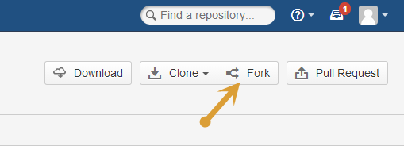
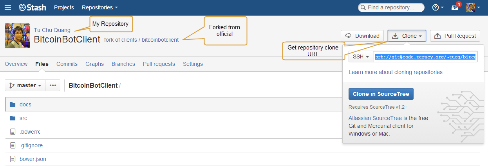

Workflow¶
At Teracy, we care about the workflow that makes it as much consistent and fun as possible, take less time with higher quality of work.
We adopted A successful Git branching model for our development workflow with some specific rules. What’s the fun with a game without rules :-D?
Initializing Working Repositories¶
To work on a repository project, fork it first to your git account.
Your working repositories MUST be cloned from your git account and stored under
the workspace/personal directory.
For example, you are going to work on the https://code.teracy.org/projects/PILOT/repos/pixelate/browse project, follow the steps below:
Forkthe official repository to your developer account.Step 1: Click
Fork.Step 2: Click
Fork repository.
Forking successfully with the URL like this:

Cloneit to workspace.Step 1: Click
Cloneto get the.gitrepository clone URL.Step 2: Copy the URL
ssh://git@code.teracy.org/~hoavt/pixelate.gitin theSSHfield.Step 3: Open the terminal window and type the
git clonecommand as below:$ git clone ssh://git@code.teracy.org/~hoavt/pixelate.git ============== "Forked" repo URL ===================Add
upstreamrepository which is the official repository.Step 1: Browse the repository
https://code.teracy.org/projects/PILOT/repos/pixelate/browse, and clickCloneto get the.gitclone URL.Step 2: Copy the URL
ssh://git@code.teracy.org/pilot/pixelate.gitin the SSH field.Step 3: Open the terminal window and type the
git remote add upstreamcommand as below:$ git remote add upstream ssh://git@code.teracy.org/pilot/pixelate.git ================= Official repo URL ==================
Recheck to verify your clone by using the
git remote -vcommand.
The successful start is when you have both these remotes on your local development:
origin(remote from your repo)upstream(remote from official repo)
After initializing working repository successfully, switch to the next step: Git Branching Off.
Git Branching Off¶
Usually, a new branch should be branched off from a target to-be-merged remote branch. It is often upstream/develop or sometimes upstream/master. However, there are cases which are not applied: Always keep in mind that you need to rebase often the work of that upstream branch to your working branch.
Firstly, you must know what the meaning of “Branching Off” is . In a shorthand, it means you checkout from a branch, then create another branch from that checkout.
$ git checkout branch-1 -b branch-2
Here is how it works: Git starts checkout branch-1, then creates branch-2 based on that checkout. Now branch-2 is on your local and ready for you to work on it.
This is a demonstration example. phuonglm is working on
features/DEV-1-fabric-deployment-virtual-machine, and you are going to work on
features/DEV-2-fabric-deployment-remote-machine which depends on
phuonglm’s features/DEV-1. On this case, you MUST indicate the branch name with deps_<issue-key>.
(In case, you are working on a branch which depends on many different branches, the branch name should have
deps_<issue-key[_issue-key]>. For example: deps_DEV-1_DEV-2.)
$ git remote add phuonglm https://github.com/phuonglm/teracy-django-boilerplate.git (1)
$ git fetch phuonglm (2)
$ git checkout phuonglm/features/DEV-1-fabric-deployment-virtual-machine -b (3)
features/DEV-2-fabric-deploymen-remote-machine-deps_DEV-1
$ git push origin features/DEV-2-fabric-deployment-remote-machine-deps_DEV-1 (4)
- Details:
- (1) Adds the official repository from which you use source code for your issue.
- (2) Fetches to get the new updates of the official repository.
- (3) Creates a new branch on your local device basing the remote branch.
- (4) Pushes your new branch to Git to wait for being reviewed and merged to the
features/DEV-1branch.
When the phuonglm’s features/DEV-1-fabric-deployment-virtual-machine has some updates, you need to fetch
and rebase on that branch:
$ git fetch phuonglm
$ git rebase phuonglm/features/DEV-1-fabric-deployment-virtual-machine
$ git push origin features/DEV-2-fabric-deployment-remote-machine-deps_DEV-1 -f
When phuonglm’s features/DEV-1 is merged into upstream/develop, you need to rebase on it to get these
new updates:
$ git fetch upstream
$ git rebase upstream/develop
$ git push origin features/DEV-2-fabric-deployment-remote-machine-deps_DEV-1 -f
Note
Git is a distributed version control system, so collaboration like this should be encouraged.
Working with Git¶
1. Workflow in Teracy¶

The workingflow is summarized under 4 major steps:
- Step 1: Branching-off based on issue
- Step 2: Developing with Code/ Commit/ Push
- Step 3: Submitting pull-request. Waiting for approval or resolving conflict if any.
- Step 4: Cleaning up branch
Let’s get in more detais:
Step 1: Branching-off based on issue
If you do not know what the meaning of “Branching-off” is, please check Git Branching Off.
Working on features
$ git fetch upstream $ git checkout upstream/master -b features/<issue-key>-<concise-title> $ git push origin features/<issue-key>-<concise-title>Working on improvements
$ git fetch upstream $ git checkout upstream/master -b improvements/<issue-key>-<concise-title> $ git push origin improvements/<issue-key>-<concise-title>Working on tasks or sub-tasks
$ git fetch upstream $ git checkout upstream/master -b tasks/<issue-key>-<concise-title> $ git push origin tasks/<issue-key>-<concise-title>Working on bugs
$ git fetch upstream $ git checkout upstream/master -b bugs/<issue-key>-<concise-title> $ git push origin bugs/<issue-key>-<concise-title>Above are the templates Branching off based on an issue’s types.
Step 2: Developing with Code/ Commit/ Push
During your coding, you would make some commit and push, in that case you have to check TWO things:
If there are some changes from the remote branch (for example, upstream/master) that you need, you have to rebase your branch with these updates. It could be done by these commands:
$ git fetch upstream $ git rebase upstream/masterBy doing this, your branch will be rebased with updates from others. If it has any conflicts, you have to resolve them by:
- Editing conflict file.
The sample on a conflict file:

The sample on a resolved-conflict file:

- Adding conflict-resolved-file in git, then continuing to rebase.
After finishing your work, add changed files to commit and push your branch:
$ git add -a $ git commit -m "<issue-key>|git commit message" $ git push origin [your-branch-name]
Step 3: Submitting Pull-request
When your issue branch is pushed, submit pull-request for reviewing on your work. There are TWO steps in submitting a pull-request:
- Create Pull-request for your code.
- Open the Create Pull Request form:

Input the neccessary information into the form:

Copy the pull request link on the browser’s address bar.
- Add Pull-request to your issue.
Open your issue –> Click Workflow –> Click Send Pull Request.

Paste the pull request link into the Pull Request URL, then click Send Pull Request in the Send Pull Request form.

Note
After a
pullrequest, you will continue to work on your working branch as normal, justpushit and the pull request will be updated with your new commits. Ping other Teraciers to help reviewing, comments, suggestions, etc.When you meet all these long strict requirements, your work will be more welcomed accepted.
Step 4 : Cleaning up branch
After your code get reviewed and approved. It will be merged to the offical repository, so you have to make a Git Branch Cleaning Up to clean up your local and get ready for the next issue.
2. Git Rules¶
To prevent chaos happening, you should follow some rules below in the workflow:
Branch Name Rules¶
When start working on a new issue, you always MUST to start a new branch for it and that branch’s name is based on each type of the issue, which means if the issue is:
feature=> Branch’s name isfeatures/<issue-key>-<concise-title>improvement=> Branch’s name isimprovements/<issue-key>-<concise-title>task or sub-task=> Branch’s name istasks/<issue-key>-<concise-title>bug=> Branch’s name isbugs/<issue-key>-<concise-title>critical bug=> Branch’s name ishot-fixes/<issue-key>-<concise-title>
In which:
<issue-key>is the “key” of the issues. It could be CLT-xxx, DEV-xxx. The key prefix is based on the type of project.<concise-title>is the issue’s title which is rewritten in concise way and replacingspacewith-.<issue-key>and<concise-title>is seperated by a-character.
For example, the issue CLT-183 | Sharing Tutorial is not firing email #652, its branch name can be bugs/CLT-183-sharing-tutorial-is-not-firing-email-#652.
Quality Checklist¶
Quality of work must be strictly defined with rules and measurements, especially with software quality.
Any work is accepted as good enough MUST meet the following (including but not limited) requirements
of quality checklist:
- No tab character
- Length of the text/code line within 100 characters
- Follow conventions and standards
- Any tests must be done and must be passed
- Any documentation must be updated
- The implementation must be good enough from the view of collaborators
Git Commit Messages¶
Git commit messages must convey the actual change/ work of that commit. Usually, the commit message should follow the convention pattern:
<issue-key> | <issue-title>: <changes description>
<Multi-line description for detail changes, notices, solutions, etc.>
For example:
DEV-1 | Auto deployment with Fabric
Fabric deployment should be very easy to deploy on both local and remote machine.
This is the work on local part.
Git Branch Cleaning Up¶
After your working branch is merged into the official repository, make sure to delete these working branches.
- Deleting remote branch:
$ git push origin :branch_name
- Deleting local branch:
$ git checkout master $ git branch -d branch_name
Git Force Push¶
Should not $ git push origin branch_name -f if your branch has another branch depending on.
Note
NEVER force push the official repositories.
3. Official Repository’s Merging and Releasing¶
With branch merging and releasing workflow, senior collaborators must follow the git branching model as mentioned in the topics above.
As the merging, pushing must be done on official teracy’s projects, you need to push to the upstream repository.
For example, you need to merge the work of features/1_auto_fabric_deployment branch from https://github.com/hoatle/django-boilerplate.
$ ws
$ cd personal
$ git clone git@github.com/hoatle/django-boilerplate.git
$ cd django-boilerplate
$ git remote add upstream git@github.com/teracyhq/django-boilerplate.git
$ git checkout develop
$ git remote add phuonglm https://github.com/phuonglm/django-boilerplate.git
$ git fetch phuonglm
$ git merge --no-ff phuonglm/features/1-auto-fabric-deployment
$ git push upstream develop
Always merge with –no-ff to make sure we have the merging point to refer to later.